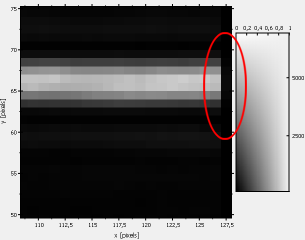
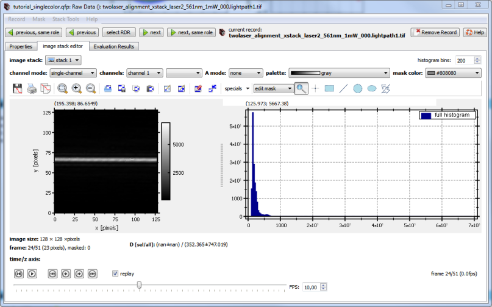
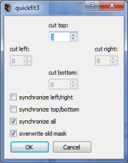
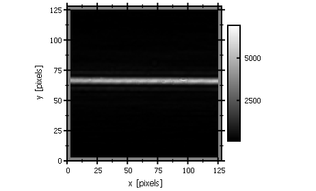
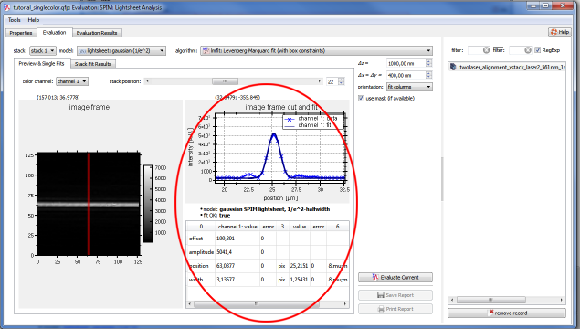
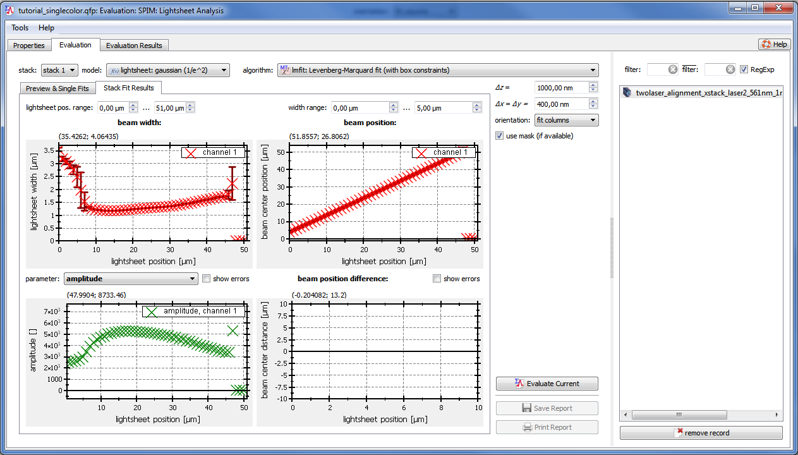

$$qf_commondoc_header.start$$ $$qf_commondoc_header.end$$
$$startbox_see$$
See the tutorial main page for an introduction to lighsheet analysis!
$$endbox$$
- Start a new QuickFit project and load the image stack from thge x-scan by clicking: Data Items | Insert Raw Data | Image Stacks | Single-File Image Stack(s) ... and selecting the file twolaser_alignment_xstack_laser2_561nm_1mW_000.lightpath1.tif from the directory
$$plugin_info:examplesdir:spim_lightsheet_eval$$/test_data/ mentioned in the introduction..
- Also Add a SPIM Lightsheet Evaluation to the project, by clicking Data Items | Insert Evaluation | SPIM: Lightsheet Analysis
- Often one wants to cut a few pixels from the border of the image stack, since these contain shadowed pixels (e.g. by a dual view optics), or the illumination is uneven there.

This can be achieved, using the mask tools of the image_stack plugin. To do so, double-click the image stack in the project and go to the "image stack editor" tab.

There you can check the frames in the image stack and set the mask either by using the mask tools above the image display or by clicking Mask | mask border. For this plugin we will use tha latter menu entry and cut 2 pixels around the frame:

Now the image looks like this with the mask in gray:

- Close the image stack editor again and open the Lightsheet analysis, by double-clicking it in the project window.
 If you loaded several image stacks, you can select the stack you want to evaluate in the files/RDRs list on the rhs of the window.
If you loaded several image stacks, you can select the stack you want to evaluate in the files/RDRs list on the rhs of the window.
- First you have to specify the stack parameters, i.e. the pixel size (Δx/Δy), the step size of the mirror motion (Δz) and the direction, in which to cut (hoizontal/vertical). For this tutorial, we use Δx=Δy=400nm, Δz=1000nm and the orientation "fit columns".

- You can use the scrollbar above the frame display to move through the image stack and click on different columns in the frame display to display different cuts through the image on the right.
- Now you have to select the fit model, you want to use and the fit algorithm. The usual choice is:
- algorithm: lmfit
- model: lightsheet: gaussian (1/e^2)
This model is a Gaussian function, $$bmath:f(x)=A\cdot\exp\left(-2\cdot\frac{(x-x_0)^2}{w^2}\right)$$ where the width $$math:w$$ is specified as $$math:1/e^2$$-halfwidth of the distribution! You can use different definitions, by choosing a different model, e.g. the model lightsheet: gaussian (FWHM), if you want the width given as full width at half maximum, which is a common measure in microscopy (but not in the FCS community!).
- Now click on and observe how the plugin moves through the image stack and performs the fits.
- If you now move throgh the stack and look at the cuts (see item 6), you can look at the fit results for the different frames in the center of the dialog:

- The plugin also provides a visualization of the fit results in the tab "Stack Fit Results":

The four graphs show different fit results, in dependence of the x-position (along the direction of lightsheet propagation):
- top-left: width of the lightsheet $$math:w$$
- top-right center position of the lightsheet $$math:x_0$$ (this moves due to the imaging properties and the movement of the mirror!)
- bottom-left: a user-selectable parameter, here the amplitude $$math:A$$.
Usually the thinnest part of the lighsheet should be positioned around the center of the field of view, i.e. around x=25μm.
- In order to better view the results, you can set the range of "lightsheet position" values at the top left of the window and of the displayed withs in the top-left plot at the top-right of the window.